图集 · 规划图与信息图
全部图纸由真实几何数据生成（EPSG:4548），可缩放查看。

总体空间结构图 · 一根主脉 / 三重点区 / 31 针脚 / 200 绣语家具
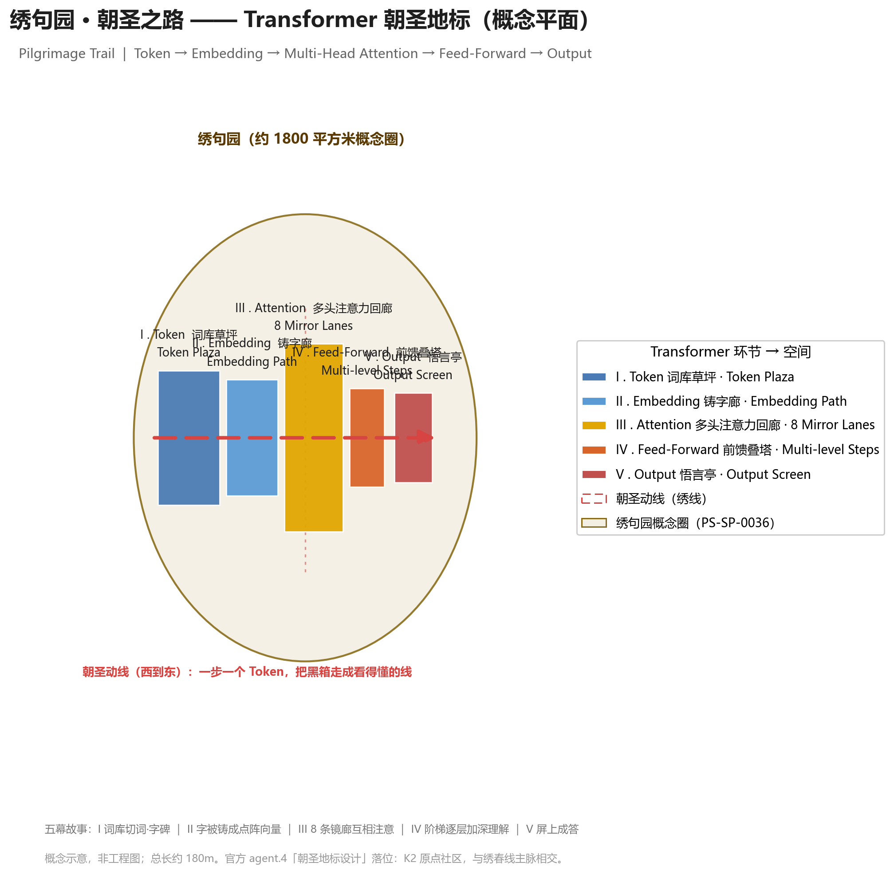
绣句园·朝圣地标平面：五幕朝圣之路（Token→Embedding→注意力→前馈→输出）
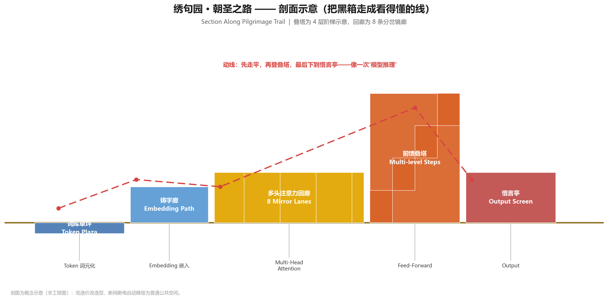
绣句园·朝圣地标剖面：8 条镜廊 / 4 级叠塔 / 环形悟言亭
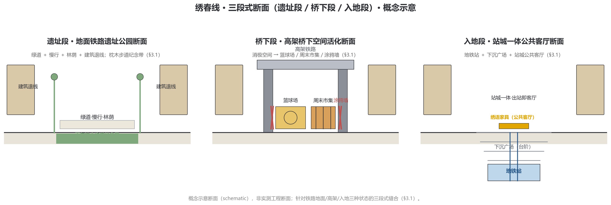
绣春线三段式断面：遗址段（地面）/ 桥下段（高架）/ 入地段（站城一体）
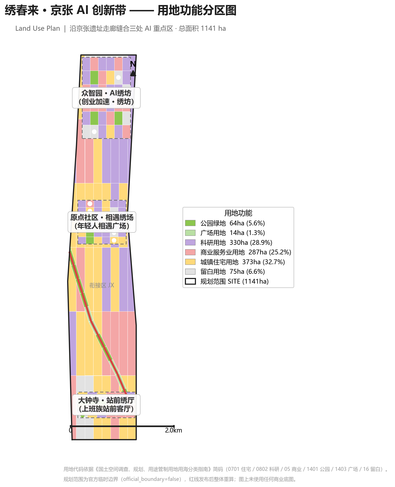
用地分区图
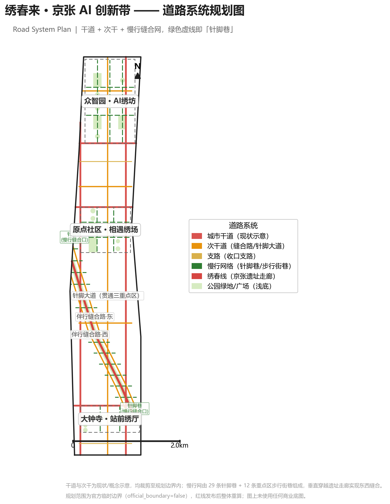
道路系统图（密度 5.56 km/km²）
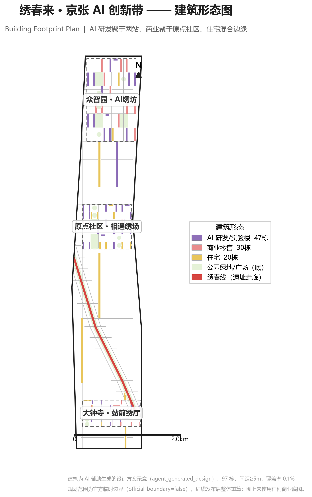
建筑形态图（97 栋概念体块）
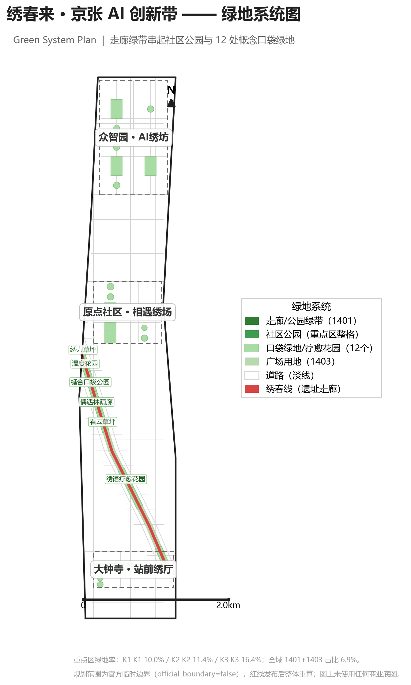
绿地系统图（绿地+广场 78.7ha）
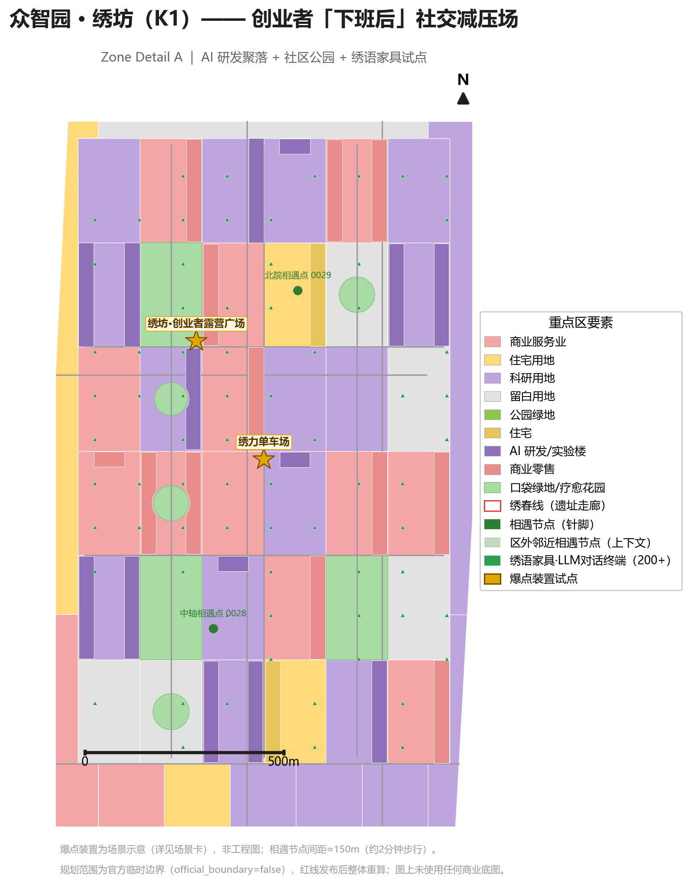
K1 众智园·绣坊（绿地率 10.0%）
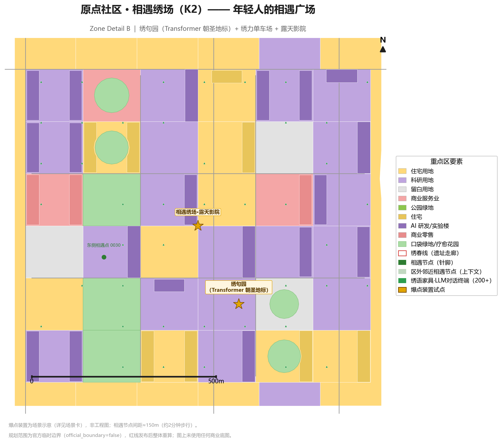
K2 原点社区·相遇绣场（11.4%）
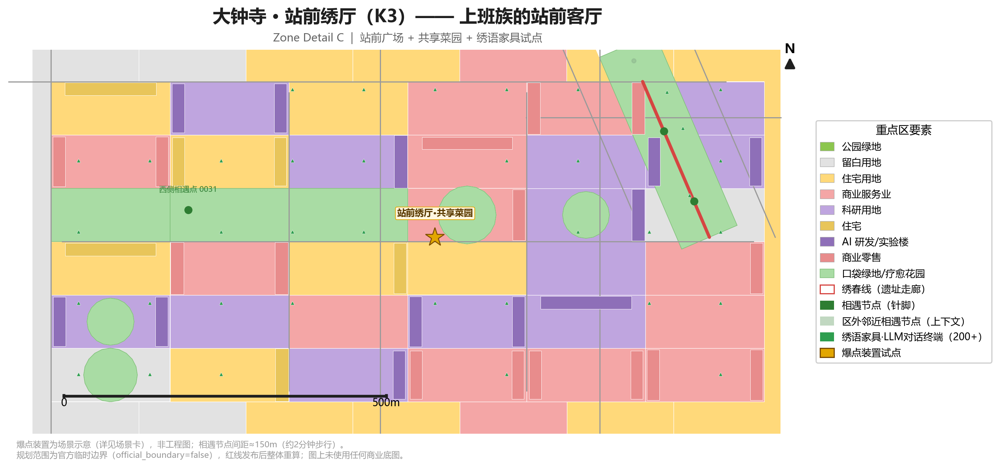
K3 大钟寺·站前绣厅（16.4%）
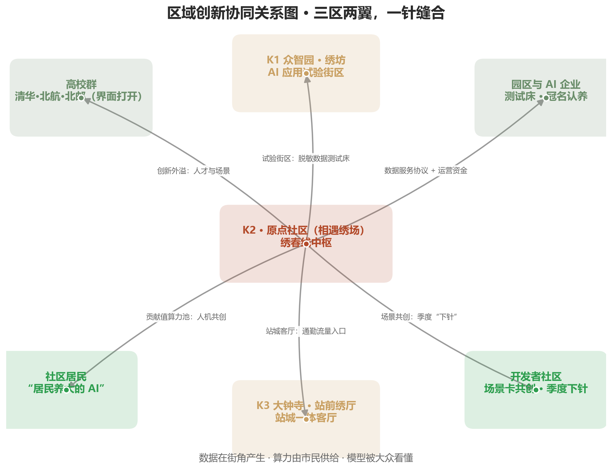
区域创新协同关系图
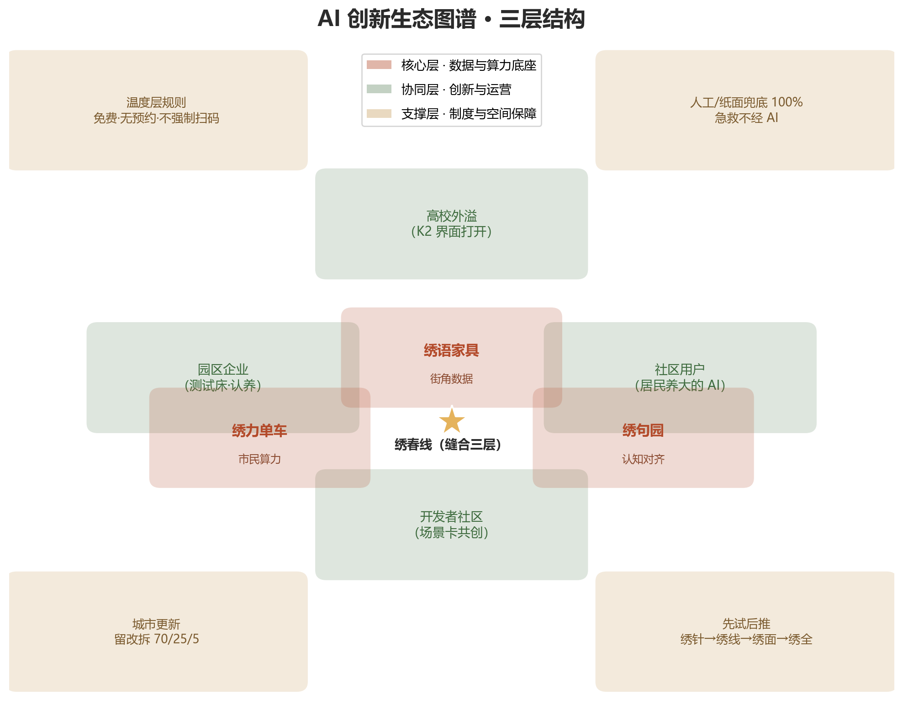
AI 创新生态图谱（三层结构）
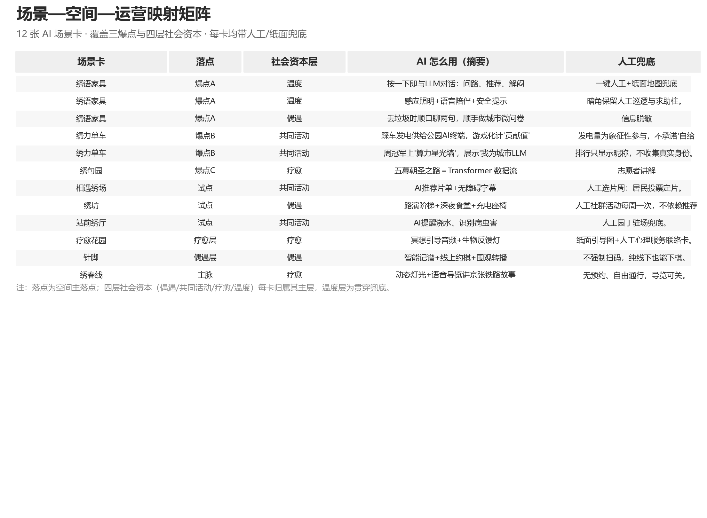
场景—空间—运营映射矩阵
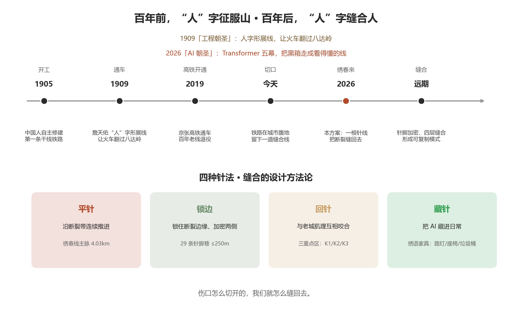
文化叙事 · 缝合故事线